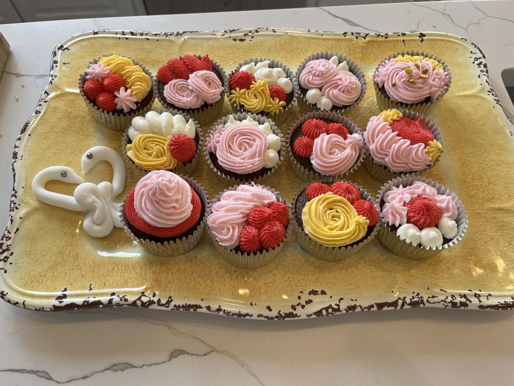
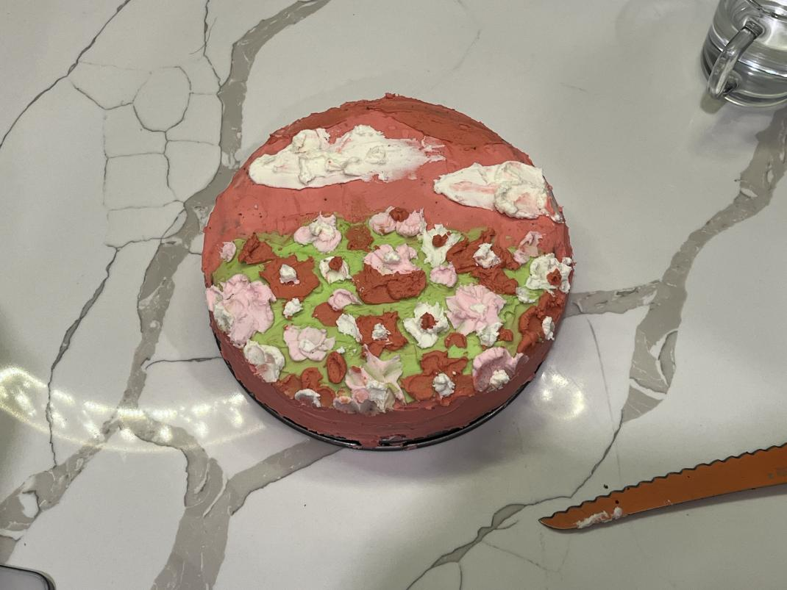
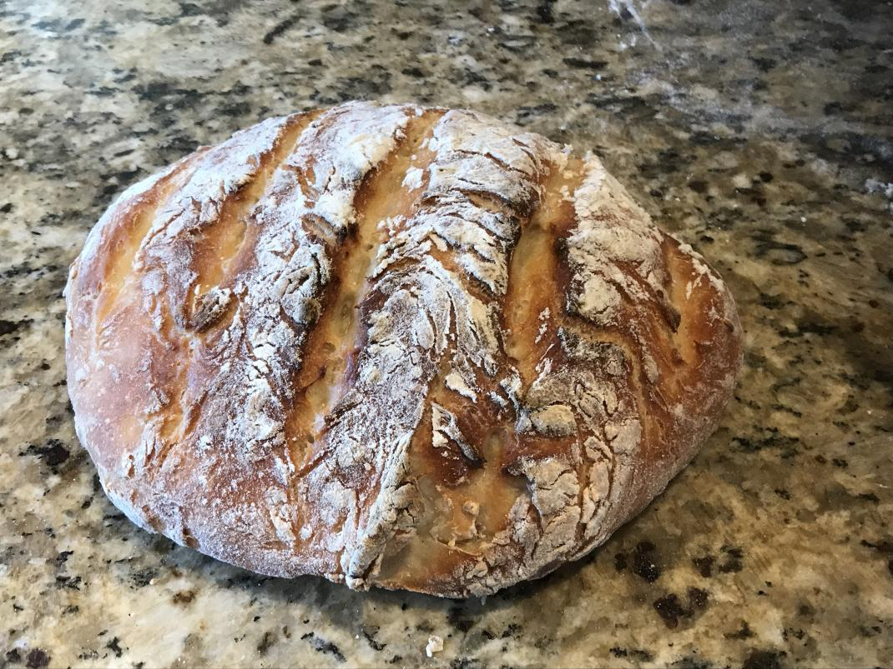
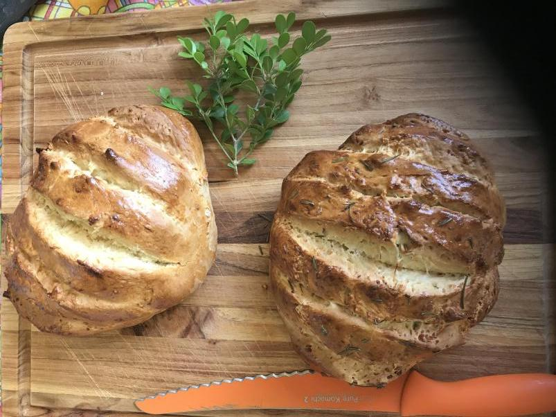
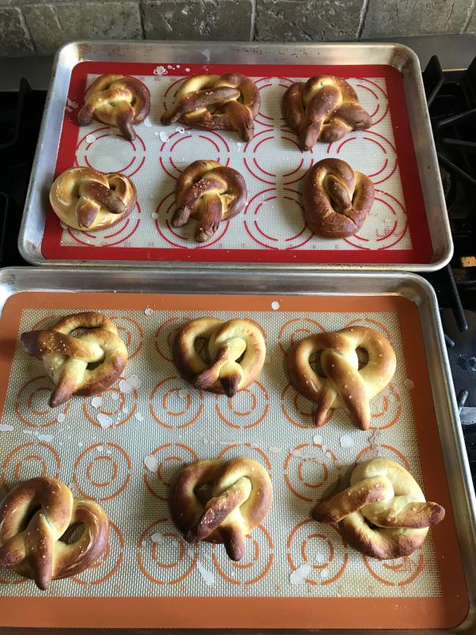
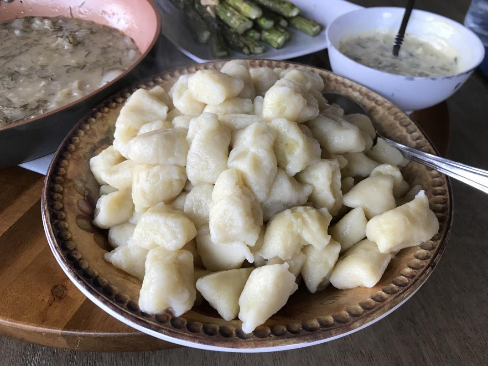
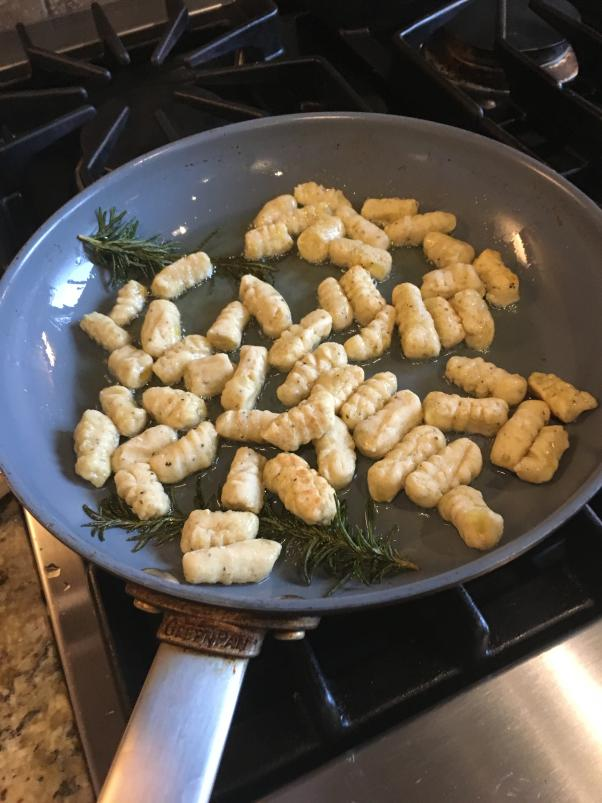
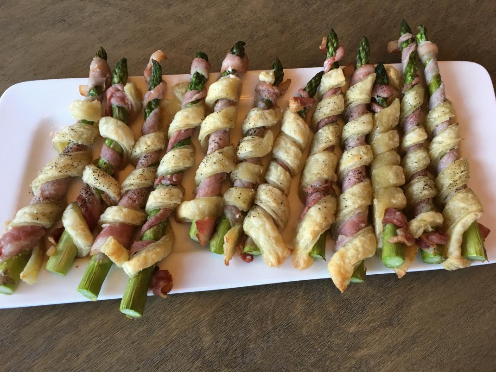
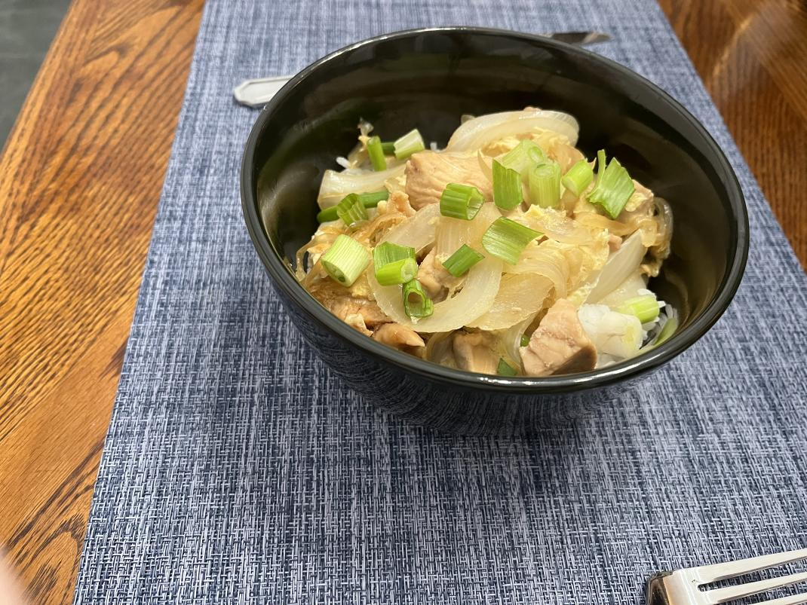

Welcome to my digital cookbook!
Return to Table of Contents
Table of Contents:
Bread Recipe
Bread Recipe (no yeast)
Pretzel Recipe
Gnocchi Recipe
Asparagus Twist Recipe
Oyakodon Recipe
Japanese Curry Recipe
Lasagna Recipe
Pizza Recipe
Rosemary Pork Recipe
Poached Chicken Recipe
Chicken and Gnocchi Recipe
Chicken Cordon Bleu Recipe
Dango Recipe
Sponge Cake Recipe
Meringue Recipe
Cinnamon Roll Recipe
Pizza Recipe
Whoopie Pie Recipe
Chocolate Pumpkin Cake Recipe
Swirl Sugar Cookie Recipe
Sweet Potato Brownie Recipe
 
Bread

Found
here
A classic, crusty, yeasty bread.
No Yeast Bread

Found
here
A no-yeast soda bread.
Pretzels

Found
here
Soft, salty pretzels.
Gnocchi
 
Found
here
Fresh, potato-based pasta.
Asparagus Twists

Found
here
Asparagus twisted with puff pastry and bacon.
Oyakodon

Found
here
A Japanese chicken and egg rice bowl.